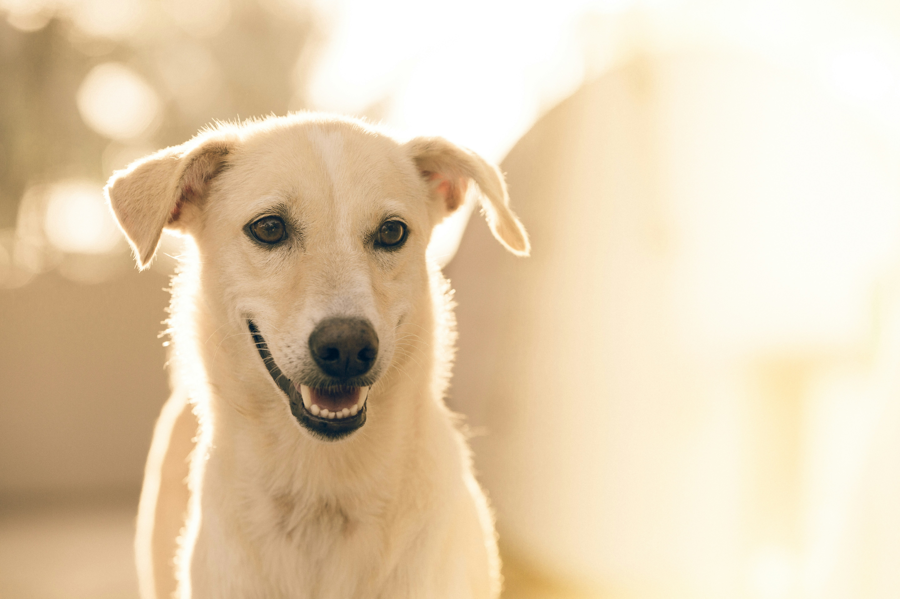

Petiapolis Veteriner Kliniği olarak, sevimli dostlarınızın ihtiyaç duyduğu cerrahi müdahaleleri en yüksek standartlarda gerçekleştiriyoruz. Kliniğimizde, steril cerrahi ortam ve en son teknolojiye sahip ekipmanlarımızla, minik dostlarınızın sağlığını korumak için her türlü cerrahi işlemi güvenle yapıyoruz. Ameliyat sonrası bakım süreçlerinde de dostlarınızın hızlı ve sağlıklı bir şekilde iyileşmesini sağlamak için gereken özeni gösteriyoruz.
Dostlarınızın bakımı ve hijyenini sağlamak için profesyonel kuaför hizmetlerimizle yanınızdayız. Petiapolis’te, tüy kesimi, tırnak bakımı, banyo ve genel temizlik gibi hizmetlerle dostlarınızın sadece sağlıklı değil, aynı zamanda şık ve bakımlı olmasını sağlıyoruz. Uzman ekibimiz, her dostunuzun ihtiyaçlarına özel bakım uygulamaları sunarak, onların konforunu ve güzelliğini ön planda tutar.

Petiapolis Veteriner Kliniği olarak, sevimli dostlarınızın ağız ve diş sağlığına da önem veriyoruz. Yeni diş hekimliği hizmetimizle, onların diş bakımını ve sağlığını en iyi şekilde koruma altına alıyoruz. Diş temizliği, diş taşı temizliği, diş çekimi ve diş hastalıklarının tedavisi gibi kapsamlı hizmetlerle dostlarınızın ağız hijyenini sağlıyoruz. Düzenli diş bakımı, onların genel sağlığı için hayati önem taşır; bu nedenle Petiapolis’te, diş sağlığı kontrollerini ve tedavilerini büyük bir titizlikle gerçekleştiriyoruz. Sağlıklı bir ağız, mutlu bir yaşam demektir!
Petiapolis Veteriner Kliniği'nde, dostlarınızın sağlık durumunu en doğru şekilde değerlendirmek için ultrason hizmeti sunuyoruz. Ultrason teknolojisi sayesinde, iç organların yapısını ve işlevlerini detaylı bir şekilde inceleyerek, hızlı ve kesin tanılar koyuyoruz. Bu sayede, dostlarınızın sağlık sorunlarını erken aşamada tespit ediyor ve gerekli tedaviyi zamanında başlatıyoruz.